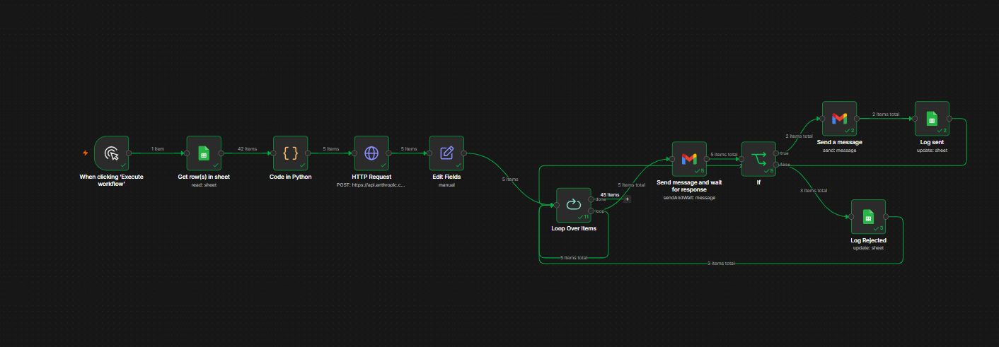

An AI agent that watches a book of customer accounts, picks the ones at risk of churn, drafts re-engagement emails, and routes every message through a human approval gate before anything sends.

A real n8n run. 42 accounts pulled from Google Sheets, 5 flagged at risk, all 5 routed through approval. 3 approved, 2 rejected.
42 product accounts read from a Google Sheet, aggregated from 8,469 real Kaggle support tickets.
A code node filters to at-risk accounts using CSAT, critical rate, ticket load, and renewal proximity.
Claude Sonnet 4.5 writes a specific, three-paragraph re-engagement email for each at-risk account.
Each draft is emailed to me with Approve and Reject buttons. The workflow pauses until I click.
Approved emails go to the customer with clean HTML formatting. Rejected drafts get logged and discarded.
Every outcome writes back to the sheet with status, action, and timestamp. The next run skips already-handled accounts.
Built two ways. First as a Python agent using the Anthropic API with tool-calling. Then rebuilt as an n8n workflow with off-the-shelf nodes. The Python version shows I can build from primitives. The n8n version shows the same workflow assembled visually so a non-engineer could maintain it. CS Ops teams usually want option two.
Human in the loop, always. Nothing sends without me clicking approve. A real CS team would never deploy an autopilot, so I didn't build one.
Real data, labeled honestly. Every support signal comes from real Kaggle tickets. The synthetic financial fields are suffixed with __SYNTH so nobody mistakes them for real numbers. Felt more honest than pretending.